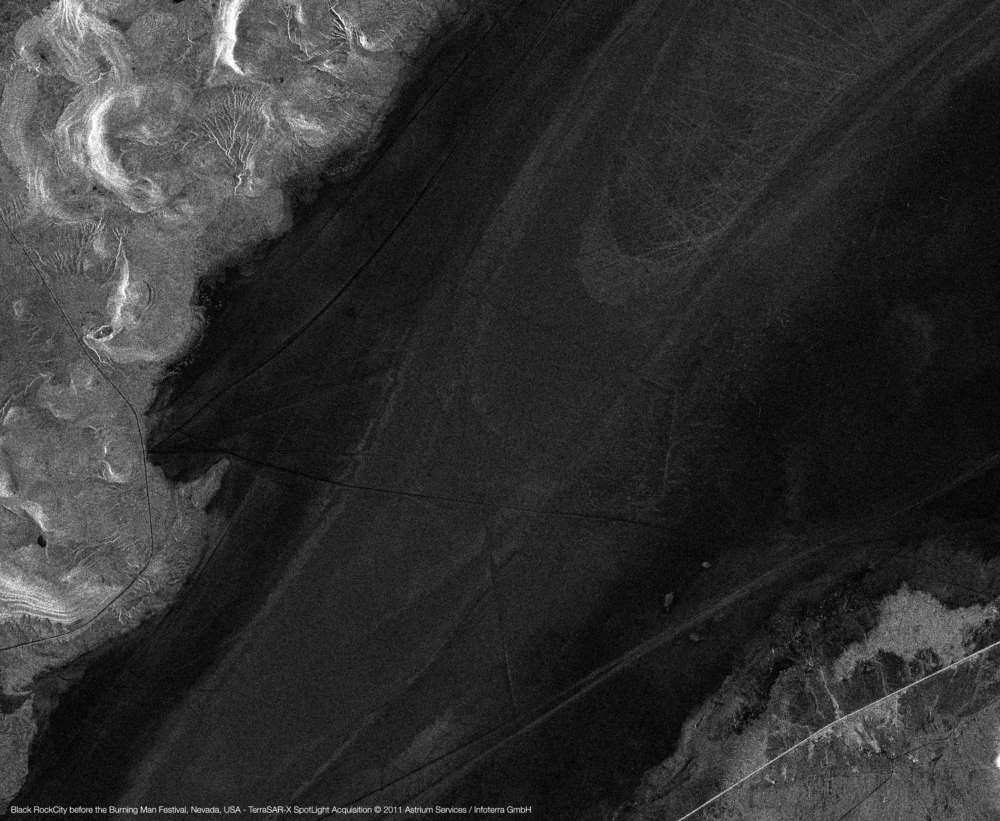
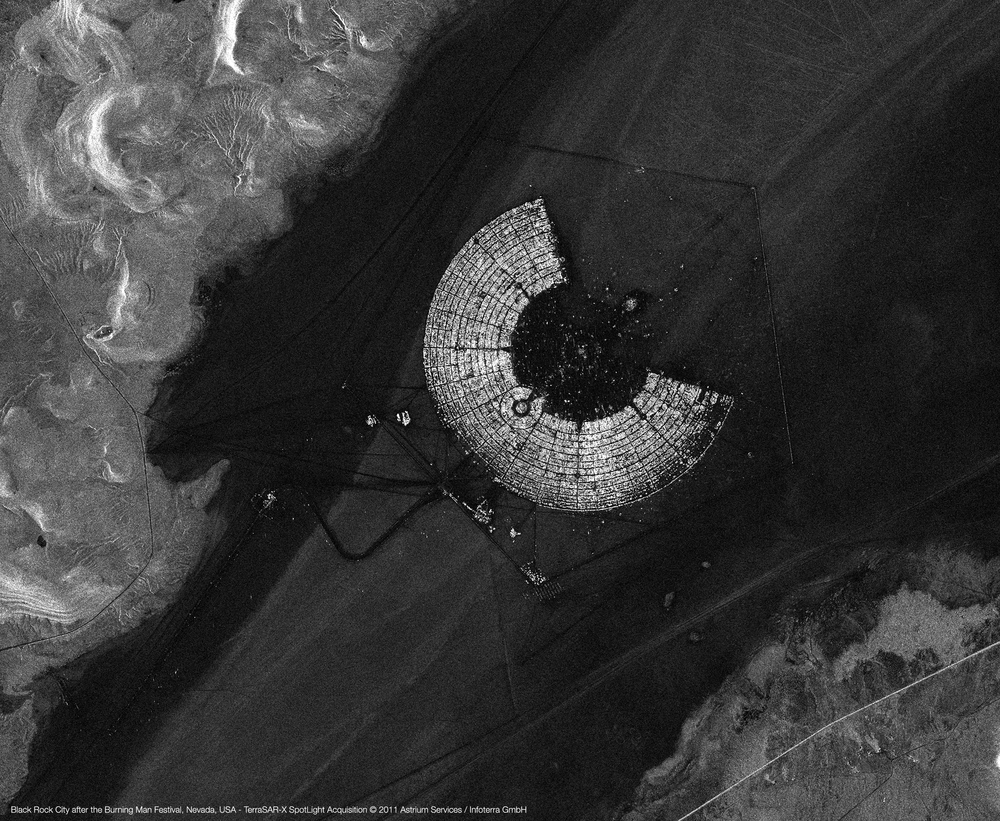
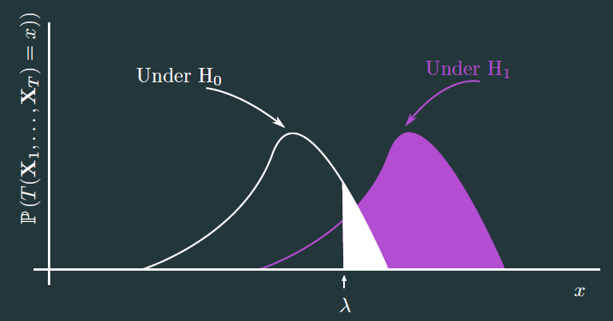
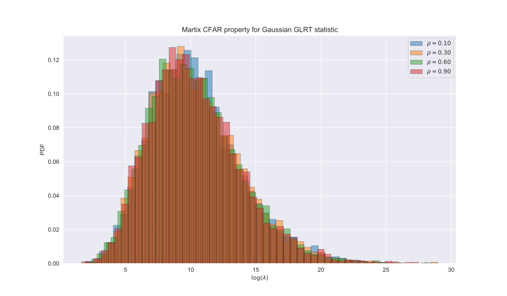
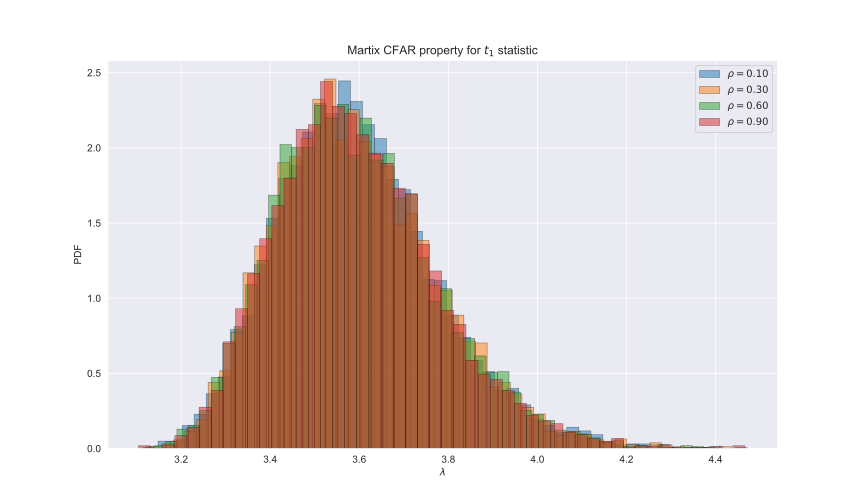
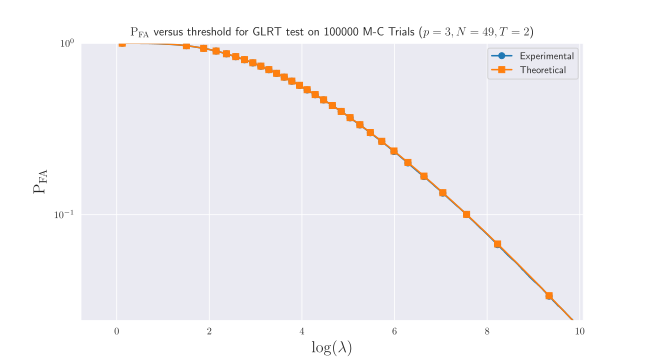

Robust statistics for testing the homogeneity of covariance scale and shape
An application to SAR Change Detection
Seminar at NUS 10th April 2019
Ammar Mian
About this talk
We consider the problem of SAR change detection through covariance matrix equality testing.
Approach based on mutivariate statistical analysis. Pre-requisites:
- Basic algebra
- Basic statistics
→ Do not hesitate to pose questions during the talk
Slides are available at: https://ammarmian.github.io/slides/NUS_10_04_2019/robust_covariance_homogeneity_test.html
For questions: ammar.mian@centralesupelec.fr
Plan of the presentation
The Change detection problem
What we want to do ?
Considering a time series of SAR images, we want to detect spatial areas where notceable changes have occured.
 Illustration on Terrasar X data
Assumptions
- The images are co-registred
- Unsupervised methodology
- Data is complex and multivariate
Covariance-based approaches
Description of the approach
We consider a sliding windows approach to consider spatially local data.
On this window, we assume i.i.d observations:
\[ \forall (k,t)\, \mathbf{x}_k^t \sim \mathbb{C}\mathcal{N}(\mathbf{0}_p, \mathbf{\Sigma}_t)\]Idea: Compare the covariances $\mathbf{\Sigma}_t$ over time.
Interest of the approach
- The SAR data is typically noisy (speckle noise) and can be multivariate (polarimetric for example).
- Covariance accounts for the local correlations between the observed noisy data. A change in the scene is likely to impact this matrix in a way.
- Using statistical detection theory allow to have theoretical results on false alarms or detection performance.
The detection problem
Denote by $\left\{\mathbf{X}_1,\dots,\mathbf{X}_T\right\}$ a collection of $T$ mutually independent samples of i.i.d $p$-dimensional complex vectors: $\mathbf{X}_t = [\mathbf{x}_1^{t},\dots,\mathbf{x}_{N}^{t}]$.
We assume $\forall (k,t),\,\mathbb{E}\{\mathbf{x}_k^{t}\}=\mathbf{0}_p$ and we denote $\mathbf{\Sigma}_t=\tau_t\boldsymbol{\xi}_t$ the shared covariance matrices among the elements of $\mathbf{X}_t$. $\boldsymbol{\xi}_t$ is the shape matrix ($Tr(\boldsymbol{\xi}_t) = p$) and $\tau_t$ is the scale.
We want to choose between the following alternatives:
\[ \left\{ \begin{array}{ll} \mathrm{H}_{0}: & \mathbf{\Sigma}_{1} = \ldots = \mathbf{\Sigma}_{T} = \mathbf{\Sigma}_{0} \, ,\\ \mathrm{H}_{1}: & \exists (t, t'),\, \mathbf{\Sigma}_t \neq \mathbf{\Sigma}_{t'} \end{array}\right. \]
Statistic of decision
We want to obtain:
a statistic of decision \(T\): \(\begin{aligned} \mathbb{C}^{p\times N}\times \dots \times \mathbb{C}^{p\times N} &\rightarrow \mathbb{R}^+\\ \mathbf{X}_1,\dots,\mathbf{X}_T &\rightarrow T(\mathbf{X}_1,\dots,\mathbf{X}_T) \end{aligned}\)
a threshold \(\lambda\)
So that \(\mathbb{P}\left(T(\mathbf{X}_1,\dots,\mathbf{X}_T)>\lambda/\mathrm{H}_1\right)\) is high while \(\mathbb{P}\left(T(\mathbf{X}_1,\dots,\mathbf{X}_T)>\lambda/\mathrm{H}_0\right)\) is low.
Statistics of decision under Gaussian assumption
Statistics of decision under Gaussian assumption (1/2)
Suppose $\forall t,\, \forall k,\, \mathbf{x}_k^{t} \sim \mathbb{C}\mathcal{N}(\mathbf{0}_p,\mathbf{\Sigma}_t)$ so that $ p_{\mathbf{x}_k^{t};\mathbf{\Sigma}_t}(\mathbf{x}_k^{t};\mathbf{\Sigma}_t) = \dfrac{1}{\pi^p|\mathbf{\Sigma}_t|}\mathrm{exptr}\left\{\mathbf{S}_k^{t}\mathbf{\Sigma}_t^{-1} \right\} $, where $\mathbf{S}_k^{t} = \mathbf{x}_k^{t}{\mathbf{x}_k^{t}}^{\mathrm{H}}$.
Many statistic exists but the options can be reduced to$^1$ :
- The Generalized Likelihood Ratio Test (GLRT) statistic:
\begin{equation} \hat{\Lambda}_\mathrm{G} = \frac{\left|{\hat{\mathbf{\Sigma}}_0^{\mathrm{SCM}}}\right|^{TN}}{\displaystyle\prod_{t=1}^{T} \left|{\hat{\mathbf{\Sigma}}_t^{\mathrm{SCM}}}\right|^N} \underset{\mathrm{H}_0}{\overset{\mathrm{H}_1}{\gtrless}} \lambda,\, \mathrm{where:} \label{eq : GLRT Gaussian} \end{equation} \begin{equation} \begin{aligned} \forall t, \hat{\mathbf{\Sigma}}_t^{\mathrm{SCM}} = \frac{1}{N}\displaystyle\sum_{k=1}^N \mathbf{S}_k^{t} \text{ and }\hat{\mathbf{\Sigma}}_0^{\mathrm{SCM}} = \frac{1}{T} \displaystyle\sum_{t=1}^T \hat{\mathbf{\Sigma}}_t^{\mathrm{SCM}}. \end{aligned} \end{equation}
$^1$ D. Ciuonzo, V. Carotenuto and A. De Maio, "On Multiple Covariance Equality Testing with Application to SAR Change Detection," in IEEE Transactions on Signal Processing, vol. 65, no. 19, pp. 5078-5091, 1 Oct.1, 2017.
Statistics of decision under Gaussian assumption (2/2)
- The $t_1$ statistic obtained from either Terell or Rao tests:
- The Wald statistic:
\begin{equation} \hat{\Lambda}_{\mathrm{t}_1} = N\displaystyle \sum_{t=1}^T \mathrm{Tr} \left[ \left(\hat{\mathbf{\Sigma}}_t^{\mathrm{SCM}}\left(\hat{\mathbf{\Sigma}}_0^{\mathrm{SCM}}\right)^{-1} -\mathbf{I}_p\right)^2 \right] \underset{\mathrm{H}_0}{\overset{\mathrm{H}_1}{\gtrless}} \lambda. \end{equation}
\begin{equation} \begin{aligned} \hat{\Lambda}_{\mathrm{Wald}} = & N \displaystyle\sum_{t=2}^T \mathrm{Tr}\left[\left(\mathbf{I}_p - \hat{\mathbf{\Sigma}}_1^{\mathrm{SCM}} (\hat{\mathbf{\Sigma}}_t^{\mathrm{SCM}})^{-1} \right)^2\right] \\ & - q\left(N \displaystyle\sum_{t=1}^T (\hat{\mathbf{\Sigma}}_t^{\mathrm{SCM}})^{-T} \otimes (\hat{\mathbf{\Sigma}}_t^{\mathrm{SCM}})^{-1} , \mathrm{vec}\left({\displaystyle\sum_{t=2}^T \boldsymbol{\Upsilon}_t}\right)\right) \underset{\mathrm{H}_0}{\overset{\mathrm{H}_1}{\gtrless}} \lambda, \end{aligned} \end{equation} \begin{equation*} \begin{aligned} \mathrm{where}\, \boldsymbol{\Upsilon}_t & = N \left( (\hat{\mathbf{\Sigma}}_t^{\mathrm{SCM}})^{-1} - (\hat{\mathbf{\Sigma}}_t^{\mathrm{SCM}})^{-1} \hat{\mathbf{\Sigma}}_1^{\mathrm{SCM}} (\hat{\mathbf{\Sigma}}_t^{\mathrm{SCM}})^{-1} \right).\\ q(\mathbf{x},\mathbf{\Sigma}) & = \mathbf{x}^{\mathrm{H}}{\mathbf{\Sigma}}^{-1} \mathbf{x} \end{aligned} \end{equation*}
Some properties of the statistics
CFARness:
The GLRT, $t_1$ and Wald statistic have the CFAR property with regards to the covariance parameter.
Proof:The statistics are invariant for the group of transformation $ \mathcal{G} = \left\{\mathbf{G}\, \mathbf{x}_k^{t}| ,\, \mathbf{G} \in \mathbb{S}_p^{\mathbb{H}} \right\}. $
Distribution under $\mathrm{H}_0$ (F-Approximation$^1$):
Under null hypothesis, we have: $ 2(1-c)\ln(\hat{\Lambda}_{\mathrm{B}}) \sim \chi^2\left((T-1)p(p+1)\right)$, where $c=\dfrac{T^2-1}{T(N-1)}\times\dfrac{2p^2+3p-1}{6(T-1)(p+1)}$ and $\hat{\Lambda}_{\mathrm{B}}$ is a modified version of $\hat{\Lambda}_{\mathrm{G}}$
There are similar results for others statistics.
$^1$ Box, G. E. P. “A General Distribution Theory for a Class of Likelihood Criteria.” Biometrika, vol. 36, no. 3/4, 1949, pp. 317–346.
False alarm/threshold relationship
Under $\mathrm{H}_0$ we have $^1$:
\begin{equation*} \begin{aligned} P\left\{ 2\rho\log(\hat{\Lambda}_\mathrm{G}) \leq z \right\} & \approx P\left\{\chi^2(f^2) \leq z \right\} + \omega_2 \left[ P\left\{\chi^2(f^2 + 4) \leq z \right\} - P\left\{\chi^2(f^2) \leq z \right\} \right] \\ f&=\,(T-1)p^{2}, \, \rho =\,1-\frac{(2p^{2}-1)}{6(T-1)p}\left(\frac{T}{N}-\frac{1}{NT}\right),\\ \omega_{2}&=\,\frac{p^{2}(p^{2}-1)}{24\rho^{2}}\left(\frac{T}{N^{2}}-\frac{1}{(NT)^{2}}\right)-\frac{p^{2}(T-1)}{4}\left(1-\frac{1}{\rho}\right)^{2} \end{aligned} \end{equation*}
$^1$ Anderson, T. W. (1962). An introduction to multivariate statistical analysis (No. 519.9 A53). New York: Wiley.
Experimental validation of matrix CFAR property (1/2)
Experimental validation of matrix CFAR property (2/2)
Experimental validation of distributino under $\mathrm{H}_0$
Extension to Elliptical distributions
Non-Gaussianity high-resolution images
Sometimes the Gaussian hypothesis is not accurate !
To model this kind of distribution the family of elliptical distributions have been introduced$^1$
$^1$E. Ollila, D. E. Tyler, V. Koivunen and H. V. Poor, "Complex Elliptically Symmetric Distributions: Survey, New Results and Applications," in IEEE Transactions on Signal Processing, vol. 60, no. 11, pp. 5597-5625, Nov. 2012.
$\mathbb{C}ES$ distributions
Probability distribution:
\[p_{\mathbf{x};g;\mathbf{\Sigma}}(\mathbf{x};g;\mathbf{\Sigma}) = \mathfrak{C}_{p,g}|\mathbf{\Sigma}|^{-1}g(\mathbf{x}^{\mathrm{H}}\mathbf{\Sigma}^{-1}\mathbf{x}) \]
where $g$ is a density generator function with some rgularity conditions, $\mathbf{\Sigma} \in \mathbb{S}^{\mathbb{H}}_p$ is the scatter matrix and $\mathfrak{C}_{p,g}$ is a normalisation constant.
Example:
Multivariate Student-t: ${{\Gamma \left ({{\nu+g}\over{2}}\right)\vert{{\Sigma}}\vert^{-1/2}}\over{(\pi \nu)^{{1}\over{2}}\Gamma \left ({{\nu}\over{2}}\right)\left \{1+{{\delta ({\bf y}, {\mu},{{\Sigma}})}\over{\nu}}\right \}^{{{1}\over{2}}(\nu+g)}}}$
Problem: How do we test the equality of scatter matrix in this model ? In peculiar, can we test scale and shape separately ?
Approach 1: Bootsrapping the Gaussian GLRT
Since the distribution of Gaussian-derived detector is known$^1$ under $\mathbb{C}ES$ model it is possible to correct it in order to obtain one keeping the CFAR property in $\mathbb{C}ES$ context.
Hallin proposed to use the following test$^2$:
$\mathcal{Q}_\mathcal{N} = 2\displaystyle\sum_{1\leq t\le t'\leq T} \mathcal{Q}_{\mathcal{N};t,t'} \geq \chi^2\left(\dfrac{(T-1)p(p+1)}{2}\right)_{1-\mathrm{P}_{\mathrm{FA}}}$, where:
\begin{equation} \begin{aligned} \mathcal{Q}_{\mathcal{N};t,t'}=\dfrac{1}{4(1+\hat{\kappa}_p)}\left\{\mathrm{Tr}\left[(\hat{\mathbf{\Sigma}}_0^{\mathrm{SCM}})^{-1}(\hat{\mathbf{\Sigma}}_t^{\mathrm{SCM}}-\hat{\mathbf{\Sigma}}_{t'}^{\mathrm{SCM}})^2 \right]\right. - \\ \left.\dfrac{\hat{\kappa}_p}{(p+2)\hat{\kappa}_p+2} \mathrm{Tr}^2\left[(\hat{\mathbf{\Sigma}}_0^{\mathrm{SCM}})^{-1}(\hat{\mathbf{\Sigma}}_t^{\mathrm{SCM}}-\hat{\mathbf{\Sigma}}_{t'}^{\mathrm{SCM}}) \right] \right\}, \end{aligned} \end{equation} and $\hat{\kappa}_p = p(p+1)/2\sum_{t=1}^T\sum_{k=1}^N d^4(\mathbf{x}_k^{t}, \hat{\mathbf{\Sigma}}_0^{\mathrm{SCM}})-1$ and $d(\mathbf{x},\mathbf{\Sigma}) = \|\mathbf{\Sigma}^{-1/2}\mathbf{x}\|$
$^1$ Yanagihara, H., Tonda, T., and Matsumoto, C. (2005).The effects of nonnormality on asymptotic distributions of some likelihood ratio criteria for testing covariance structures under normal assumption. Journal of Multivariate Analysis, 96(2):237{264.
$^2$ Marc Hallin, Davy Paindaveine, Optimal tests for homogeneity of covariance, scale, and shape, Journal of Multivariate Analysis, Volume 100, Issue 3, 2009, Pages 422-444,
Approach 2: GLRT under $\mathbb{C}ES$ model
We compute the following statistic: \begin{equation} \hat{\Lambda} = \dfrac{\mathrm{max}_{\mathbf{\Sigma}_1,\dots,\mathbf{\Sigma}_{T}}\quad p_{\mathbf{X}_1,\dots,\mathbf{X}_T;\mathbf{\Sigma}_1,\dots,\mathbf{\Sigma}_{T}}\left(\mathbf{X}_1,\dots,\mathbf{X}_T;\mathbf{\Sigma}_1,\dots,\mathbf{\Sigma}_{T}/\mathrm{H}_1\right)}{\mathrm{max}_{\mathbf{\Sigma}_0}\quad p_{\mathbf{X}_1,\dots,\mathbf{X}_T;\mathbf{\Sigma}_0}\left(\mathbf{X}_1,\dots,\mathbf{X}_T;\mathbf{\Sigma}_0/\mathrm{H}_0\right)} \end{equation} which yields: \begin{equation} \hat{\Lambda}_\mathcal{R}^g = \frac{|{\hat{\mathbf{\Sigma}}_0^{\mathrm{M}}}|^{TN}}{\displaystyle\prod_{t=1}^{T} |{\hat{\mathbf{\Sigma}}_t^{\mathrm{M}}}|^N} \displaystyle\prod_{t=1}^T \displaystyle\prod_{k=1}^N \dfrac{g({\mathbf{x}_k^{t}}^{\mathrm{H}}\{\hat{\mathbf{\Sigma}}_0^{\mathrm{M}}\}^{-1}\mathbf{x}_k^{t})}{g({\mathbf{x}_k^{t}}^{\mathrm{H}}\{\hat{\mathbf{\Sigma}}_t^{\mathrm{M}}\}^{-1}\mathbf{x}_k^{t})}\underset{\mathrm{H}_0}{\overset{\mathrm{H}_1}{\gtrless}} \lambda, \end{equation} where: $\hat{\mathbf{\Sigma}}_t^M = f_t(\hat{\mathbf{\Sigma}}_t^M)$, $\hat{\mathbf{\Sigma}}_0^M = \frac{1}{T}\displaystyle\sum_{t=1}^T f_t(\hat{\mathbf{\Sigma}}_0^M) $ and $f_t(\mathbf{\Sigma}) = \frac{1}{N}\displaystyle\sum_{k=1}^N \dfrac{-g'({\mathbf{x}_k^{t}}^{\mathrm{H}}\{\hat{\mathbf{\Sigma}}\}^{-1}\mathbf{x}_k^{t})}{g({\mathbf{x}_k^{t}}^{\mathrm{H}}\{\hat{\mathbf{\Sigma}}\}^{-1}\mathbf{x}_k^{t})} \mathbf{x}_k^{t}{\mathbf{x}_k^{t}}^{\mathrm{H}}$Problem: We need to know $g$ !!!
Approach 2bis: Select $g=\frac{1}{x^p}$
The statistic reads: \begin{equation} \hat{\Lambda}_\mathcal{R}^{1/x^p} = \frac{|{\hat{\mathbf{\Sigma}}_0^{\mathrm{M}}}|^{TN}}{\displaystyle\prod_{t=1}^{T} |{\hat{\mathbf{\Sigma}}_t^{\mathrm{M}}}|^N} \displaystyle\prod_{t=1}^T \displaystyle\prod_{k=1}^N \dfrac{\left({\mathbf{x}_k^{t}}^{\mathrm{H}}\{\hat{\mathbf{\Sigma}}_t^{\mathrm{M}}\}^{-1}\mathbf{x}_k^{t}\right)^p}{\left({\mathbf{x}_k^{t}}^{\mathrm{H}}\{\hat{\mathbf{\Sigma}}_0^{\mathrm{M}}\}^{-1}\mathbf{x}_k^{t}\right)^p}\underset{\mathrm{H}_0}{\overset{\mathrm{H}_1}{\gtrless}} \lambda, \end{equation}
Properties$^1$: - This statistic is valid for testing the Shape matrix for any elliptical distribution.
- The distribution of $2\log(\hat{\Lambda}_\mathcal{R}^g)$ under $\mathrm{H}_0$ is assymptotically that of a $\chi^2 \left( (T-1)p(p+1) \right)$
Problem: We can't test a change in the scale !
$^1$ A. Mian, J. Ovarlez, G. Ginolhac and A. M. Atto, "A Robust Change Detector for Highly Heterogeneous Multivariate Images," 2018 IEEE International Conference on Acoustics, Speech and Signal Processing (ICASSP), Calgary, AB, 2018, pp. 3429-3433.
Approach 3: Compound-Gaussian model
We consider the Compound-Gaussian model: $\mathbf{x}_k^{t} \sim \sqrt{\tau_k^{t}}\mathbb{C}\mathcal{N}(\mathbf{0}_p, \boldsymbol{\xi}_{t}),$ where $\tau_k^{t}$ are assumed to be deterministic and $Tr(\boldsymbol{\xi})=p$. $\rightarrow$ We can integrate these unknown parameters in the GLRT$^1$: \begin{equation} \hat{\Lambda}_\mathrm{MT} = \frac{|{\hat{\mathbf{\Sigma}}_0^{\mathrm{MT}}}|^{TN}}{\displaystyle\prod_{t=1}^{T} |{\hat{\mathbf{\Sigma}}_t^{\mathrm{MT}}}|^N} \displaystyle\prod_{k=1}^N \dfrac{\left(\displaystyle\sum_{t=1}^T {\mathbf{x}_k^{t}}^{\mathrm{H}}\{\hat{\mathbf{\Sigma}}_t^{\mathrm{MT}}\}^{-1}\mathbf{x}_k^{t}\right)^{Tp}}{\displaystyle\prod_{t=1}^T\left({\mathbf{x}_k^{t}}^{\mathrm{H}}\{\hat{\mathbf{\Sigma}}_0^{\mathrm{MT}}\}^{-1}\mathbf{x}_k^{t}\right)^p}\underset{\mathrm{H}_0}{\overset{\mathrm{H}_1}{\gtrless}} \lambda,\,\mathrm{where:} \end{equation} $\hat{\mathbf{\Sigma}}_t^{\mathrm{MT}} = \frac{p}{N}\displaystyle\sum_{k=1}^N \dfrac{\mathbf{x}_k^{t}{\mathbf{x}_k^{t}}^{\mathrm{H}}}{{\mathbf{x}_k^{t}}^{\mathrm{H}}\{\hat{\mathbf{\Sigma}}^{\mathrm{MT}}\}^{-1}\mathbf{x}_k^{t}}$ and $\hat{\mathbf{\Sigma}}_0^{\mathrm{MT}} = \frac{p}{N}\displaystyle\sum_{k=1}^N \dfrac{\displaystyle\sum_{t=1}^T \mathbf{x}_k^{t}{\mathbf{x}_k^{t}}^{\mathrm{H}}}{\displaystyle\sum_{t=1}^T{\mathbf{x}_k^{t}}^{\mathrm{H}}\{\hat{\mathbf{\Sigma}}^{\mathrm{MT}}\}^{-1}\mathbf{x}_k^{t}} $$^1$ A. Mian, G. Ginolhac, J. Ovarlez and A. M. Atto, "New Robust Statistics for Change Detection in Time Series of Multivariate SAR Images," in IEEE Transactions on Signal Processing, vol. 67, no. 2, pp. 520-534, 15 Jan.15, 2019.
Results on SAR images
The UAVSAR dataset
- Polarimetric data $(p=3)$
- Dimensions: 2360px by 600 px
- Resolution: 1m67 (Range) and 1m (Azimuth)
The UAVSAR dataset (2/2)
- Polarimetric data $(p=3)$
- Dimensions: 2360px by 600 px
- Resolution: 1m67 (Range) and 1m (Azimuth)